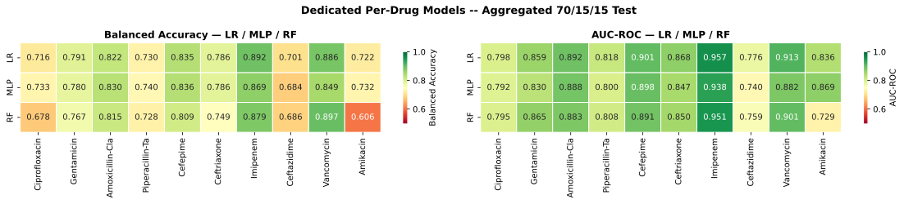
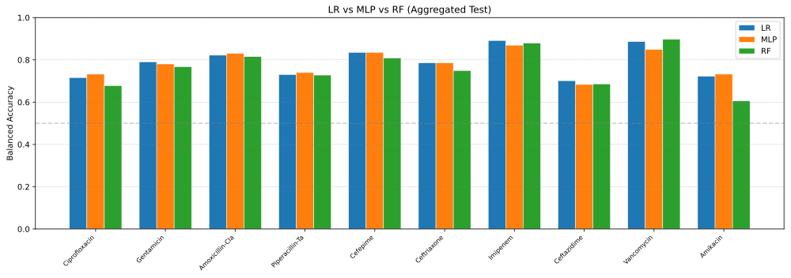
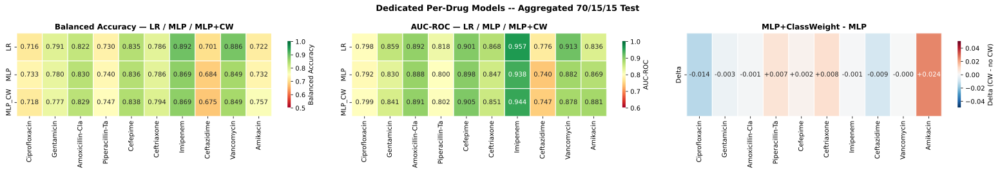
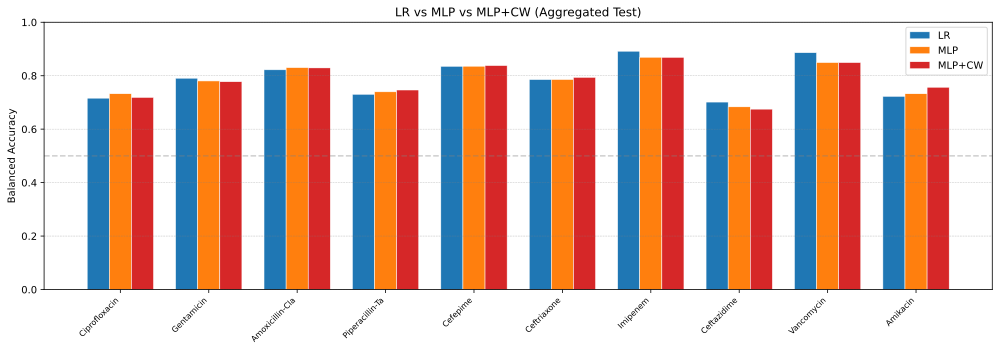

Results and Outputs
Grid Results
The 8×8 GridSearchCV over learning rate and dropout produces per-drug optimal configurations. Results are stored in:
07-01-results_dedicated_lr_mlp/best_params.csv— Optimal LR(C) and MLP(lr, dropout) per drug (best_params.csv)07-01-results_dedicated_lr_mlp/results_balacc.csv— Balanced Accuracy per drug × per model07-01-results_dedicated_lr_mlp/results_auc.csv— AUC-ROC per drug × per model
Aggregate Results (pooled test, 70/15/15)
Drug |
LR BalAcc |
LR AUC |
MLP BalAcc |
MLP AUC |
RF BalAcc |
RF AUC |
|---|---|---|---|---|---|---|
Ciprofloxacin |
0.716 |
0.798 |
0.733 |
0.792 |
0.678 |
0.795 |
Gentamicin |
0.791 |
0.859 |
0.780 |
0.830 |
0.767 |
0.865 |
Amoxicillin-Clavulanic acid |
0.822 |
0.892 |
0.830 |
0.888 |
0.815 |
0.883 |
Piperacillin-Tazobactam |
0.730 |
0.818 |
0.740 |
0.800 |
0.728 |
0.808 |
Cefepime |
0.835 |
0.901 |
0.836 |
0.898 |
0.809 |
0.891 |
Ceftriaxone |
0.786 |
0.868 |
0.786 |
0.847 |
0.749 |
0.850 |
Imipenem |
0.892 |
0.957 |
0.869 |
0.938 |
0.879 |
0.951 |
Ceftazidime |
0.701 |
0.776 |
0.684 |
0.740 |
0.686 |
0.759 |
Vancomycin |
0.886 |
0.913 |
0.849 |
0.882 |
0.897 |
0.901 |
Amikacin |
0.723 |
0.836 |
0.732 |
0.869 |
0.606 |
0.729 |
Mean |
0.788 |
0.862 |
0.784 |
0.848 |
0.761 |
0.843 |
BalAcc values come from results_balacc.csv, AUC-ROC values from
results_auc.csv; RF results are read from rf_results.pkl.
The Random Forest is tuned on the same pooled split, but with a subsampled
randomized search rather than the exhaustive grid the LR and MLP families
use: 07-03-Dedicated-RF-Fast.ipynb runs
RandomizedSearchCV (n_iter=20, cv=2) over n_estimators
[100, 200, 300, 500], max_depth [10, 20, 30, None], min_samples_leaf
[2, 5, 10] and class_weight [balanced, balanced_subsample], scoring
candidates on a 5000-row subsample; the winner is retrained on the full
training split and its decision threshold is tuned from 3-fold out-of-fold
predictions on that subsample. The main 07 notebook keeps an exhaustive
GridSearchCV variant of the same grid for reference — the RF columns
above are the fast run’s numbers.
RF Checkpoints
Both artefacts are produced by 07-03 (which writes its own copy under
results_dedicated_lr_mlp_rf/); the results file is placed next to the
LR/MLP exports so the comparison table can pick it up.
results_dedicated_lr_mlp/rf_results.pkl— serialised RF test-set results (BalAcc, AUC, threshold, best params) per drugrf_checkpoints/— trained RF models per drug (joblib format)
Heatmaps
Model × drug heatmaps provide an at-a-glance comparison of all three model families across all drugs for both Balanced Accuracy and AUC-ROC.


Pooled test Balanced Accuracy (left) and AUC-ROC (right) per drug for LR, MLP and RF.


Pooled test Balanced Accuracy per drug for the three model families.
Per-Drug Patterns
LR and MLP are effectively tied on average; the MLP leads on Ciprofloxacin, Amoxicillin-Clavulanic acid, Piperacillin-Tazobactam and Amikacin, while LR leads on Gentamicin, Imipenem, Ceftazidime and Vancomycin.
RF stays close in AUC but is weaker in Balanced Accuracy; it is the best model on Vancomycin and the weakest on Amikacin, where the few resistant samples make the decision threshold fragile.
The class-imbalanced drugs are the least stable across model families and metrics, which is why the aggregated study (08) tracks both BalAcc and AUC.
Threshold Selection
Decision thresholds are selected differently per model family: LR and RF
tune the threshold with 3-fold cross-validated predictions within the
training split (cross_val_predict), while the MLP tunes it on the
external validation split. The per-site worst-case threshold protocol used
by the federated clients is documented in
08.
Loss Histories and Model Weights
07 does not persist per-epoch training histories, and MLP weights are not
saved (the models/ directory is empty). What is kept: the Random Forest
models in rf_checkpoints/ (07-03) and the per-drug result records of the
class-weight ablation in
results_dedicated_lr_mlp_cw/checkpoints/mlp_cw_<drug>.pkl (metrics,
thresholds and best params — not weights). The loss curves for the
hyperparameters selected here come from diagnostics that retrain the same
configurations:
Loss curves for the 07 hyperparameters — pooled best-config reruns (02-01, A+B+C+D) and A-only reruns (03-01), with the implementation caveats.
The reruns use MaldiMLPClassifier rather than 07’s custom PyTorch loop, so
the curves are representative of the selected configurations, not bit-identical
to the 07 models (whose final training runs up to 100 epochs with cosine
T_max=90, a 10-epoch warmup and an internal 10% validation split for early
stopping — patience 10, best-validation weights restored). The 8×8 grid is
scored on the external validation Balanced Accuracy; the class-weighted
CrossEntropyLoss applies only to the 07-02 ablation.
Class Weight Ablation
07-02-Dedicated-MLP-ClassWeight.ipynb explores whether inverse-frequency
Class weight improves MLP performance, particularly for drugs with
highly imbalanced resistance labels (some drugs have <5% resistant
samples). It reuses 07-01’s per-drug splits, preprocessing and LR results
(inputs rebuilt by
07-02a),
trains the same 8×8 lr×dropout grid with a class-weighted
CrossEntropyLoss (per-drug weights = #negatives / #positives from the
training labels) and tunes every threshold on the validation split. Run
2026-10-15; artefacts in results_dedicated_lr_mlp_cw/.
Drug |
MLP BalAcc |
MLP-CW BalAcc |
Δ BalAcc |
MLP AUC |
MLP-CW AUC |
MLP-CW threshold |
|---|---|---|---|---|---|---|
Ciprofloxacin |
0.733 |
0.718 |
-0.014 |
0.792 |
0.799 |
0.16 |
Gentamicin |
0.780 |
0.777 |
-0.003 |
0.830 |
0.841 |
0.05 |
Amoxicillin-Clavulanic acid |
0.830 |
0.829 |
-0.001 |
0.888 |
0.891 |
0.30 |
Piperacillin-Tazobactam |
0.740 |
0.747 |
+0.007 |
0.800 |
0.802 |
0.05 |
Cefepime |
0.836 |
0.838 |
+0.002 |
0.898 |
0.905 |
0.33 |
Ceftriaxone |
0.786 |
0.794 |
+0.008 |
0.847 |
0.851 |
0.11 |
Imipenem |
0.869 |
0.869 |
-0.001 |
0.938 |
0.944 |
0.06 |
Ceftazidime |
0.684 |
0.675 |
-0.009 |
0.740 |
0.747 |
0.05 |
Vancomycin |
0.849 |
0.849 |
-0.000 |
0.882 |
0.878 |
0.78 |
Amikacin |
0.732 |
0.757 |
+0.024 |
0.869 |
0.881 |
0.09 |
Mean |
0.784 |
0.785 |
+0.001 |
0.848 |
0.854 |
- |
Validation metrics are in mlp_cw_val_metrics.csv and the chosen
configurations in mlp_cw_best_params.csv.


Per-drug test metrics: Balanced Accuracy (left) and AUC-ROC (middle) for LR, MLP and the class-weighted MLP, plus the per-drug delta MLP-CW − MLP (right).


Pooled test Balanced Accuracy per drug for LR, MLP and the class-weighted MLP.
On average the weighting is close to neutral — +0.001 Balanced Accuracy (0.784 → 0.785) and +0.006 AUC (0.848 → 0.854) — and the per-drug pattern follows the class balance:
Ranking improves almost everywhere: AUC rises on 9 of 10 drugs (largest: Amikacin +0.013, Gentamicin +0.011); the only regression is Vancomycin (−0.004), the drug with the fewest resistant samples (~95).
Thresholded accuracy gains on the rarest class: Amikacin +0.024 BalAcc (~85 resistant training samples), Ceftriaxone +0.008, Piperacillin-Tazobactam +0.007, Cefepime +0.002.
Costs fall on well-represented drugs: Ciprofloxacin −0.014, Ceftazidime −0.009, Gentamicin −0.003; the remaining three move by ≤0.001.
Thresholds are validation-tuned (so the comparison is threshold-fair) and sit far from 0.5 on the imbalanced drugs — e.g. Amikacin 0.09, Ceftriaxone 0.11, Vancomycin 0.78.
Even with weighting the MLP (0.785) does not overtake the pooled LR baseline (0.788): inverse-frequency weighting is a small recalibration, not a general accuracy win.